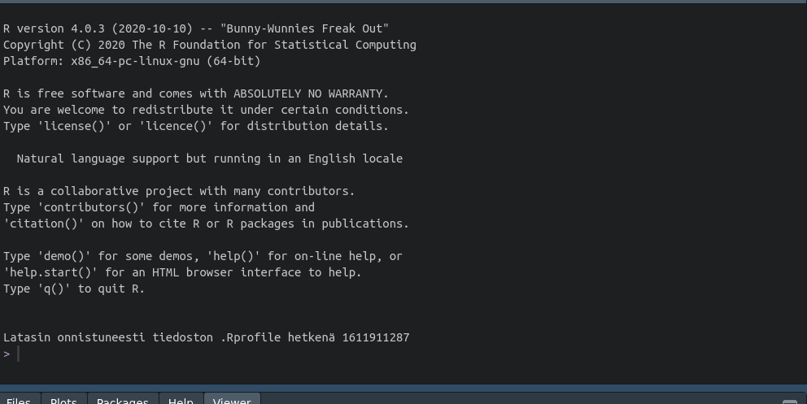

Väkiluku kuntatasolla vuoden 2020 aluejaolla
Tässä esimerkissä haemme viimeisimmän kuntatason tiedon väkiluvusta vuoden 2020 aluejaolla. Tieto löytyy kuntien avainluvut osiosta.
Alla olevassa giffistä saat käsityksen mitä prosessi edellyttää:

Aluksi siis ladataan paketit sekä datojen hakemiseen, käsittelyyn että visualisointiin.
# datat
library(pxweb) # Tilastokeskuksen pxweb-rajapinta
library(geofi) # Tilastokeskuksen wfs-rajapinta
# käsittely & siivoaminen
library(dplyr)
library(tidyr)
library(janitor)
# visualisointi
library(ggplot2)Sitten haetaan taajama-aste -data pxweb-rajapinnasta ja kuntajat wfs-rajapinnasta, ja liitetään data yhteen.
# WFS-data
muni20 <- get_municipalities(year = 2020)
# PXWEB-data
pxweb_query_list <-
list("Alue 2020"=c("*"),
"Tiedot"=c("M411"))
# Download data
px_data <-
pxweb_get(url = "http://pxnet2.stat.fi/PXWeb/api/v1/fi/Kuntien_avainluvut/2020/kuntien_avainluvut_2020_viimeisin.px",
query = pxweb_query_list)
# Convert to data.frame
px_data <- as_tibble(as.data.frame(px_data, column.name.type = "text", variable.value.type = "text"))
map <- left_join(muni20,
clean_names(px_data), by = c("name_fi" = "alue_2020"))Sitten tehdään kartta, jossa täyttövärinä käytetään muuttujaa kuntien_avainluvut, joka siis yhtä kuin Väkiluku, 2019.
ggplot(map, aes(fill = kuntien_avainluvut)) + geom_sf()
Väkiluku maakuntatasolla
`geofi’-paketin kuntaluokitusavaimen avulla voi aggregoida datan kuntatasolta ylöspäin Tilastokeskuksen luokittelurajapinnan tietojen avulla. Seuraavassa koodikimpaleessa väkiluku aggregoidaan maakuntatasolle.
mk_map <- map %>%
group_by(maakunta_name_fi) %>%
summarise(kuntien_avainluvut = sum(kuntien_avainluvut))
ggplot(mk_map) +
geom_sf(aes(fill = kuntien_avainluvut)) +
geom_sf_text(aes(label = paste(maakunta_name_fi, "\n",kuntien_avainluvut)),
size = 3,
color = "white")